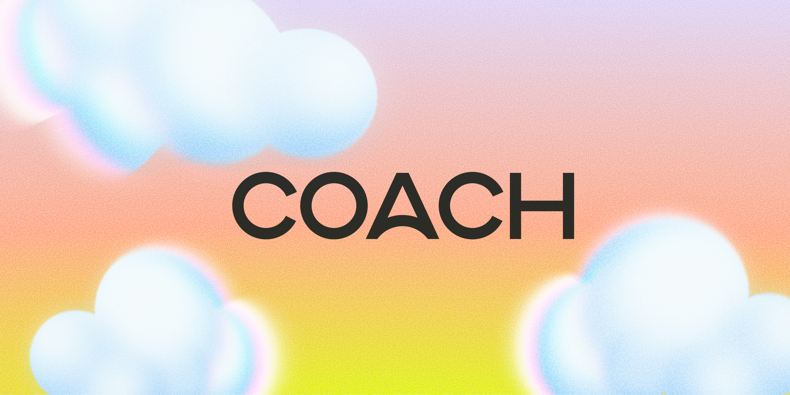

The problem
Where it started
Most tracker and journal apps tell half the story. The data people log, like medication and daily habits, rarely connects to what they write about how they feel, so the patterns that matter stay hidden.
Our brief was to close that gap with a lightweight, focused product that surfaces only what's useful. Simple enough to become a daily ritual, and powerful enough to reveal insights and patterns that would otherwise go unnoticed.
{{ s.title }}
{{ s.item }}
{{ s.body }}

The result
What changed
Coach now runs on a fully agent-ready design system that makes on-brand product development straightforward. New features and iterations come together quickly, unlocking the speed of AI development while preserving the human creative decisions that make the brand and product distinct.